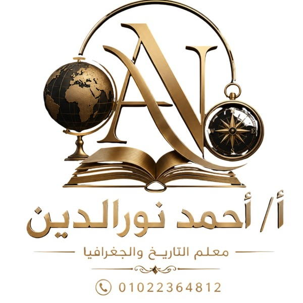

درس
لعبة
مع الأستاذ أَحْمَد نُورالدِّين
الصَّفُّ السَّادِسُ الابْتِدَائِيُّ - الْوَحْدَةُ الأُولَى - الدَّرْسُ الثَّانِي: تَضَارِيسُ وَطَنِنَا الْعَرَبِيِّ
الدِّرَاسَاتُ الاجْتِمَاعِيَّةُ
رجوع
عنوان اللعبة
1 / 25
الفريق الأول
دوره الآن
0
الفريق الثاني
دوره الآن
0
إجابة صحيحة!
اختر طريقة اللعب
في كل مرة تظهر ٢٠ سؤالًا مختلفة بشكل عشوائي
👤
لعب فردي
العب وحدك واعرف نتيجتك
🏆
منافسة بين فريقين
الفريقان يتبادلان الأسئلة
اسم الفريق الأول
اسم الفريق الثاني
🚀 ابدأ المنافسة
إلغاء